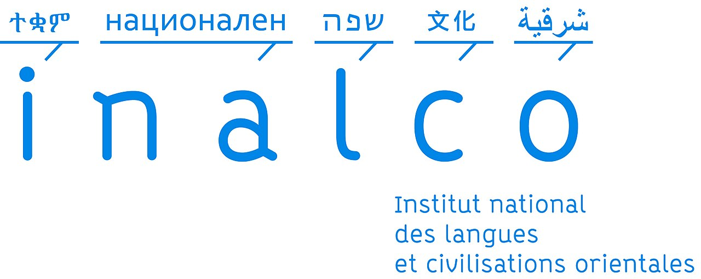

À propos du projet
Cadre académique et objectifs.
Membres du groupe
Myriam
Peng
Hulya
Ce projet s'inscrit dans le cadre du cours de Projet de Programmation Encadré (PPE) du master pluriTAL, co-accrédité par l'INALCO, l'Université Paris Nanterre et la Sorbonne Nouvelle.
Il repose sur un travail collaboratif en groupe, afin de nous initier aux pratiques du développement en équipe : gestion de versions avec Git, répartition des tâches, relecture de code, et intégration de contributions multiples dans une base de code commune.
Sur le plan technique, l'objectif du semestre a été de construire une pipeline complète appliquée à des corpus de flux RSS en français. Cela comprend :
- La collecte et la lecture de fichiers XML RSS selon plusieurs méthodes (
re,etree,feedparser) - Le parcours d'arborescences de fichiers et le filtrage par date, source et catégorie
- La sérialisation et désérialisation du corpus en JSON, Pickle et XML
- L'analyse morphosyntaxique des articles via spaCy, Stanza ou Trankit (forme, lemme, POS)
- La modélisation thématique par LDA (Gensim) avec paramétrage fin
Pour le rendu final, nous avons été introduits à BERTopic, présenté comme une alternative neuronale à la LDA,
avec des options de filtrage grammatical (--pos) et de choix de représentation (--token),
afin de comparer les deux approches de topic modeling sur nos corpus.
Universités partenaires
Master TAL co-accrédité par l'INALCO, l'Université Paris Nanterre et la Sorbonne Nouvelle.
